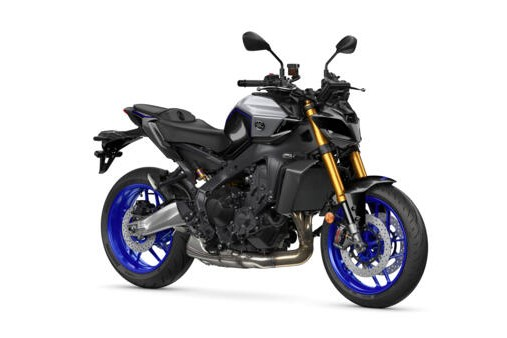

Yamaha MT-09 SP
The Yamaha MT-09 SP takes everything that makes the MT-09 a streetfighter legend – and upgrades it. With premium suspension components, an exclusive R1M-inspired color scheme, and even more precise electronic rider aids, the MT-09 SP is built for those who want naked bike attitude with track-level refinement.
Specifications
- Engine displacement: 889 cc
- Power output: approx. 87.5 kW (119 hp)
- Engine type: 3-cylinder, liquid-cooled CP3 engine
- Transmission: 6-speed with quickshifter and assist/slipper clutch
- Ride modes: 4 modes with IMU-based traction & slide control
Chassis & Brakes
- Front brake: Dual 298 mm discs with radial calipers
- Rear brake: 245 mm disc
- Front suspension: Fully adjustable 41 mm KYB USD fork
- Rear suspension: Öhlins monoshock with remote preload adjuster
- Electronics: 6-axis IMU, cornering ABS, wheelie & slide control
Dimensions & Weight
- Seat height: 825 mm
- Wet weight: approx. 190 kg
- Fuel tank capacity: 14 liters
Key Features
- Premium Öhlins rear shock for advanced control
- Fully adjustable KYB front suspension
- SP-exclusive Icon Performance color scheme
- Quickshifter up/down and full-color TFT display
- Track-inspired tech in a naked street machine
Price: CHF 12,490.–
← Back to overview